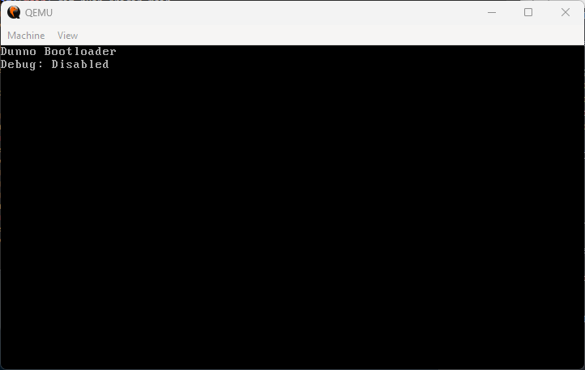

I believe that every single developer has thought about building their OS. At least a Linux distro, or maybe their programming language.
Taking the first step is hard. You may have had a few lessons on assembly and how computers work in college (if you went on one), but it is hard to put this knowledge into practice in the modern tech industry.
Doing to learn
It has been nice to do stuff just because I want to. My only goal is learning. And I have made some pretty cool stuff since I started to learn more low-level stuff.
- I made a lisp programming language to sum numbers using LLVM 😂
- I wrote a lightweight unit-test tool for assembly:
None of these projects went too far. But who cares! I learned a lot on the way. And I really recommend you to do stuff just because you would like to understand how they work.
Why an OS?
In terms of open-source, there is no doubt that Linux is a work of art, and I've no idea how it works under the hood. All I know is that a bootloader such as GRUB loads the operating system, but that is all I know... better to say that was all I knew.
I intend to make a few small posts documenting my progress. For now, All I have is a simple bootloader using BIOS Legacy Boot. It is so beautiful!

For know you can follow the progress here.